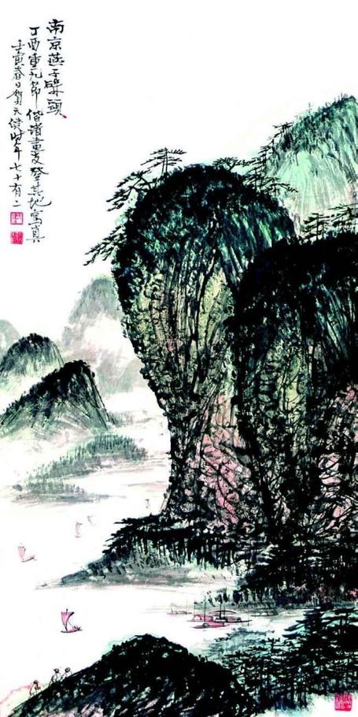
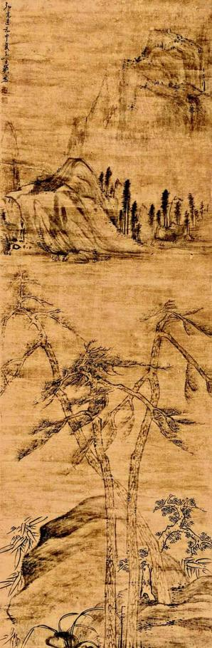
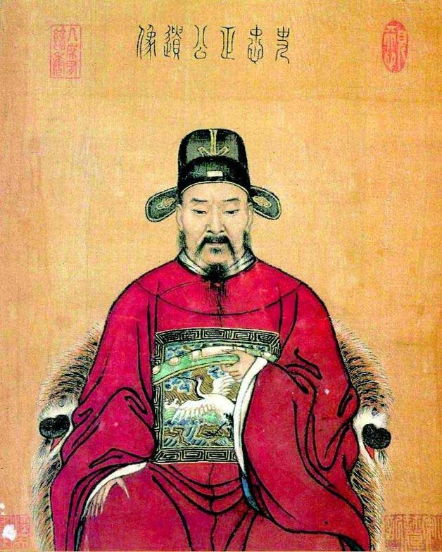
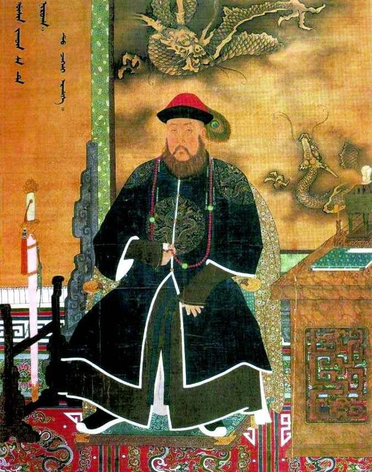
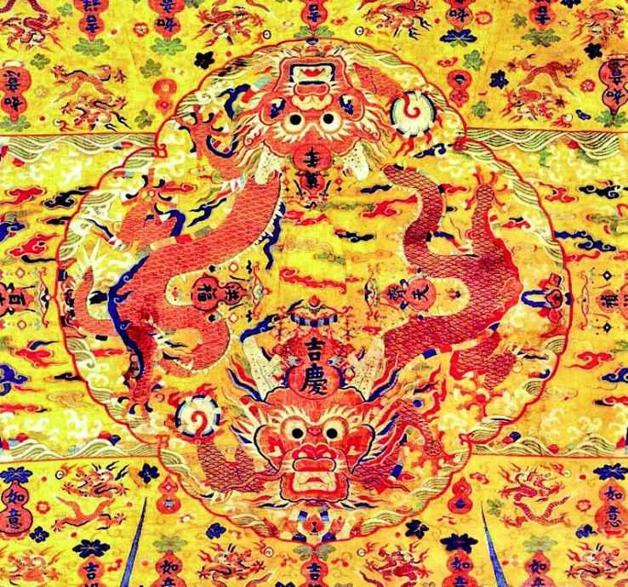

七
我们原先以为东林党人不重伦序，是想择善而立，结果发现并非如此。那么，这岂不是很有些可鄙了吗？倒也不宜这样匆忙下结论。

国画《南京燕子矶头》，作者贺天健。
甲申年四月末，朱由崧渡江抵于南京，入城前泊舟于此，接受包括史可法在内的百官觐见；五月初一日离舟，在孝陵祭告朱元璋，然后入城，从东华门进入大内，正式踏上践祚之路。

马士英画作。
马士英进士出身，有诗画之雅不足为奇，奇怪的是，他的画作题材与风格多关乎林泉之致，情氛淡泊。

《史忠正公遗像》。
乾隆四十年（1775），乾隆皇帝颁旨，以史可法为忠臣楷模，隆重表彰。圣旨评价是：“节秉清刚，心存干济，危颠难救，正直不回。”赐谥“忠正”，此图当由此而绘。画中形象，与史可法没什么关系，完全取美化态度。真实的史可法，其貌不扬，见过他的人说：“可法为人躯小貌劣，不称其衣冠。”

多尔衮像。
1643年，皇太极死，福临冲龄即位，以和硕睿亲王多尔衮为摄政王，委政于彼。清军连夺明朝两京，都是多尔衮所立功勋。

明代龙袍图案。
龙形、明黄色、云纹的含意，人所熟知，有趣的是还分布着许多葫芦，最大的两个甚至居于龙冠之顶。这是因为葫芦本虽寻常物，古时却以读音谐近“福禄”、“护禄”而视为吉祥，故尊贵如龙袍也遍绣葫芦，并写有“吉庆万年”、“洪福齐天”、“吉祥”、“如意”等字样。
欲知东林党人执意排斥福王的真正原因，非得从四十多年前说起。那时，皇长子朱常洛已经十九岁了，万历皇帝却迟迟不肯将他册立为太子。有两个原因：一、朱常洛出身不够尊贵，生母是一位普通宫女，而且是万历某日到慈宁宫给太后请安，一时“性”起、偷偷摸摸播种的结果，不料一枪命中，搞得万历很没面子；二、万历在宫中有个最爱——郑贵妃，她四年后也生下一位皇子，不是别人，正是朱由崧的父亲、后来被李自成煮了吃的老福王朱常洵。两个原因中，第二个起主要作用。倘若郑贵妃未曾生子，平安无事；一旦得子，从此变生肘腋，恩怨不绝，把明朝一直缠到死——有朱常洵后，万历动了“私心”，想把皇位留给爱妃之子，为此朱常洛册立太子的事一直拖着。
由此引发“国本之争”。经大臣往复相争，万历终于在二十九年（1601）不得不立朱常洛为太子，同时将朱常洵等其余四子封为亲王。后来，瑞、惠、桂王均已就藩之国，唯独还把福王留在身边。这也不合祖制，照规定，亲王成年后须到封地居住，若无宣召不得来京，这既是礼法，也出于国家安全考虑。又经一番理论，拖延十年之久的福王之国问题，总算解决，于四十二年（1614）三月离京就藩于洛阳。但事情远不能到此为止，反而愈演愈烈，“那时太子早晚将废的传说已经流传多年，成为人尽皆知的事了。”[35]之前就发生过鼓吹废太子以立福王的“妖书案”，而在福王之国翌年，又发生更具震撼性的“梃击案”——一个暴徒，悄悄潜近太子所居慈庆宫，先将守门太监一棍击倒，当冲到前殿檐下时被警卫制服，朱常洛幸免于难。此案搅得满朝大乱，揭盖子、捂盖子双方相持不下，最后以万历当众宣称对太子满意、无意以福王更换之，并强行处决暴徒及其“合谋”了事。这是万历四十三年（1615）的故事。过了五年，万历驾崩，风波再起，连续发生“红丸”、“移宫”两案，其间衅端一言难尽，根子上皆由万历之宠郑贵妃、福王而起。读者欲知究竟，可读温功义先生所著《三案始末》，相当经典的一本小册子，写得甚是翔实。
三案的根本，是皇帝企图摆脱束缚、使权力偏私化，和一些反对者对这一企图的顽强抵制。皇家一方，始终视为“系朕家事”，从万历到当了弘光皇帝的朱由崧，都如此理解[36]；反对者可不这么看，在他们眼里，这是以私坏公，用今天话说，究竟人大于法，还是法大于人？他们并非要维护某一个人，比如太子朱常洛，而是认为皇帝所为也要合于法度，不能想怎么干就怎么干。简而言之，四十年来斗争的实质，是皇权独大、绝对自由抑或主张它应受限制。围绕这一分歧，形成两条阵线。一条由皇帝、皇族、太监以及部分朝臣组成，显然地，这些人或是皇权直接获益者，或是指望通过巩固、加强这种权力也从中得利者。另一条阵线则由国是为重、秉公而行、在伦理和政治层面坚持独立性的士大夫正途人物组成。
两股力量都百折不挠，其中，后者的顽强格外可以注意，所谓明末的知识分子政治的觉醒，于兹表现特别明显。皇权作为千百年来的习惯势力，它的强大和绝对优势不言而喻，它可以采取一切手段来保护自身，从万历至天启三朝，也确实是这么做的。然与历代不同，明末知识分子政治集团的抵抗特别惨烈，就算魏忠贤大兴冤狱，实施特务恐怖，编撰并经皇帝钦批、颁布类似于“万历以来若干历史问题决议”的《三朝要典》，亦未能压服。非但如此，杯葛意愿愈形旺盛，并从起初仅听从良知呼唤的个人行为，逐渐演变成同声相应、同气相求的精神认同。到光、熹之间，准组织化的东林党隐然有形。
这段渊源，是福王不受欢迎的真正原因。李清分析：
因江南数在籍臣恐福王立后或追怨“妖书”及“梃击”、“移宫”诸案，谓：“潞王立，则不惟释罪，且可邀功。”[37]
在当时南京官场，李清置身门户之外，出言持平，他以上看法应较合于实际。至少钱谦益、吕大器二人确实表现出害怕灾祸加身的心理，以“不惟释罪，且可邀功”解释他们力主迎立潞王，是说得通的。后来，监生陆濬源疏攻东林：
国家祸本之酷，不在流贼，而在百官；不在今日，而在四十年前。借国本为题，沽名出色，踵发不休……夫三案者何，梃击、红丸、移宫也……乞皇上俯赐宸览，知逆案之罗织，即知计典之砌陷；知梃击之朋诬，即知红丸、移宫之颠噬。且此辈自神宗迄今且矫托王言，箝制人口，此又欺蔽朋比之大端也。[38]
他用心很恶，要勾起朱由崧的报复欲，但这段话将福王一家与东林党人之间四十年恩怨的根由，却交代得比较清楚。